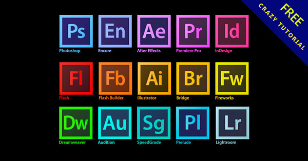

Adobe公司
歷史 軟體 軟體介紹 介紹影片
是美國一家跨國電腦軟體公司，總部位於加州的聖荷西，其官方大中華部門內也常以中文「奧多比」自稱。主要從事多媒體製作類軟體的開發，近年開始涉足豐富網際網路應用程式、市場行銷應用程式、金融分析應用程式等軟體開發。
官方網站
Adobe官方網站
歷史
- Adobe由約翰·沃諾克和查爾斯·格施克於1982年12月創辦，兩人先前都曾任職於全錄公司的帕羅奧多研究中心，離開後組建了Adobe，使PostScript頁描述語言得到商業化應用。公司名稱「Adobe」來自於加州洛思阿圖斯的奧多比溪，這條河在公司原位於加州山景城的辦公室不遠處。
- 1985年，Adobe公司在由蘋果公司LaserWriter印表機帶領下的PostScript桌面出版革命中扮演了重要的角色。
- 2005年4月18日，Adobe以34億美元的價格收購了原先最大的競爭對手Macromedia公司，這一收購極大豐富了Adobe的產品線，提高了其在多媒體和網路出版業的能力，這宗交易在2005年12月3日完成。2006年12月，Adobe宣佈全線產品採用新圖示，以彩色的背景配搭該程式的簡寫，例如：紅色配搭Fl是Flash，藍色配搭Ps是Photoshop。
- 截至2012年，Adobe共有員工11,144。另外在美國華盛頓州的西雅圖、明尼蘇達州的明尼亞波利、麻省的牛頓、加州的聖路易斯-奧比斯波，以及印度的諾伊達及班加羅爾、加拿大渥太華、德國漢堡及中國大陸北京都有辦事處。
- 2014年9月24日，Adobe宣布將關閉中國大陸研發分公司，僅保留銷售部門。據透露，原本在中國大陸的絕大部分研發和技術工作將由Adobe印度分公司承繼。
- 2018年5月23日，Adobe Systems斥資16.8億美元收購CMS Magento。
- 2018年9月24日，Adobe Systems斥資47.5億美元向Vista Equity收購營銷軟體公司Marketo Inc，以加強公司以雲計算為基本的數位營銷業務表現
- 2019年1月23日，Adobe宣布收購法國軟體公司Allegorithmic，旗下產品包括為電子遊戲開發流程中使用的貼圖軟體Substance Painter和Substance Designer。
- 2020年，因為2019冠狀病毒病疫情，Adobe宣布取消在拉斯維加斯的年度大會，並且改以線上舉行。
- 2020年12月31日，Adobe旗下的Flash Player因資安等問題，以及HTML5、WebGL和WebAssembly的興起，各大瀏覽器包括Safari、Chrome、Edge、IE11及Firefox等棄用Flash預載，Flash Player的使用率逐年下滑。因此宣布停止更新和發行Flash Player。
軟體

軟體介紹
Photoshop CC
影像編輯和合成，Photoshop 是數位影像處理和編輯的業界標準，是攝影師與設計師必備的基本工具。
Illustrator CC
是業界標準向量繪圖環境，可在媒體間進行設計。透過形狀、色彩、效果及印刷樣式，展現您的創意想法，即使處理大型複雜的檔案，也能保持速度及穩定，並且可在 Adobe 創意應用程式間有效率地切換設計。
InDesign CC
專業的排版應用程式，可完美控制設計和印刷樣式中的各個像素，是個報紙、雜誌、出版社的美術編輯必備的工具。
Dreamweaver CC
提供直覺式的視覺效果介面，可用於建立及編輯網站，並提供與最新的網路標準相容性，同時對 HTML5/CSS3 和 jQuery 提供頂級的支援。
After Effects CC
使用業界的動畫和構圖標準呈現電影般的視覺效果，和細膩動態圖形，一手掌控您的創意，並同時提供前所未見的出色效能。
Premiere Pro CC
無論各種視訊媒體，即使是手機拍攝的影片，都能自由匯入與結合，然後以原生形式編輯，不需轉碼，是影片剪接人員，最常用的非線性的編輯器。
Muse CC
在視覺化且如同印刷品般的環境中設計專業網站，無需撰寫程式碼。讓出版品及視覺設計師將內容放在網路上，使用熟悉的功能、數百種網頁字體，並輕鬆地調整版面及頁面大小以便跨裝置顯示。
Acrobat XI Pro
具有以直覺方式編輯 PDF 檔案的所需工具，還能夠將這些檔案轉換為其他常用格式，如 PDF 直接轉 Word、Excel 或 PowerPoint 當然反過來轉成 PDF 更是沒有問題。
Adobe Audition CC
具有功能完善的波形組合、光譜顯示和多音軌工具錄製、編輯和建立音效，可加快音效製作的工作流程，並同時保有最高標準的聲音品質。
Bridge CC
簡單的說就是一個看圖軟體，除了圖片之外也可以管理影片或是文件，做到快速比對資料分級收納的動作，並具有輕鬆進行批次編輯、新增浮水印，甚至設定集中的色彩偏好設定。
Fireworks
提供網頁設計師輕量而有效率的方法來為網頁建立圖形，而不需深入接觸程式碼，並能與 Photoshop、Illustrator 和 Dreamweaver 整合。
Flash Professional CC
提供建立動畫和多媒體內容的編寫環境，讓視覺效果設計師，建立在電腦和行動裝置都呈現一致的互動體驗。
InCopy CC
適合需要手稿和設計工作的大型團隊專案！InCopy 提供編寫者及編者強大的工具，可為文字設定樣式、透過追蹤變更協作並進行簡單版面修改，可輕鬆地與 InDesign 整合。
Lightroom
提供攝影師有效率地處理影像所需的精確工具，深受很多攝影師的喜愛
SpeedGrade CC
提供圖層色彩校正及設計工具的調色應用程式，可確保數位視訊專案看起來一致且令人注目，適合想讓作品大放異彩的剪接師、製片、調色人員及視覺效果藝術家使用。
介紹影片